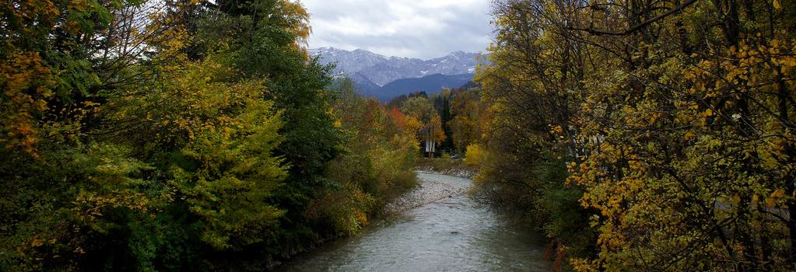
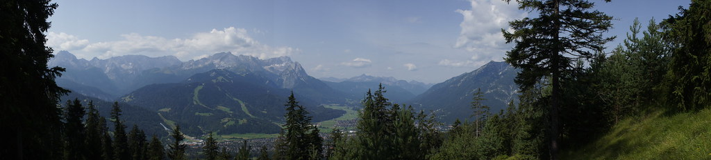
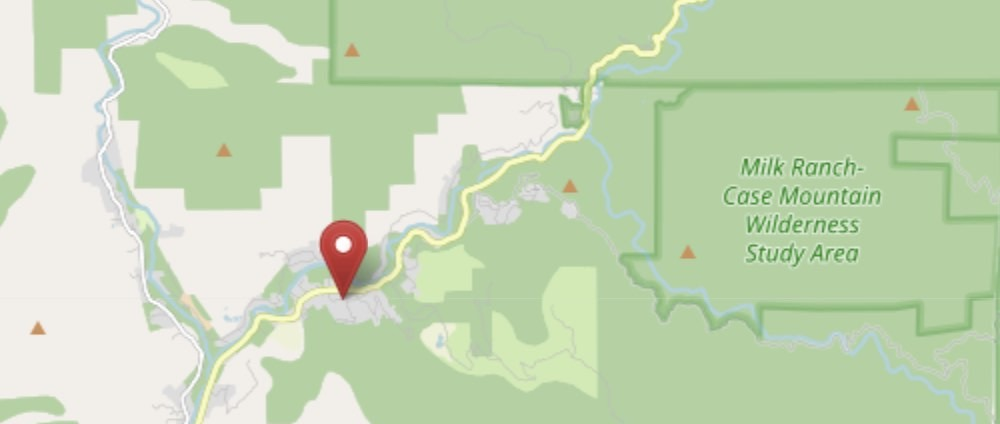

ABOUT THE PARK
The Park is an national park in the southern Noland. The park was established on September 25, 1890 to protect 1,635 km2 of forested mountainous terrain. Encompassing a vertical relief of nearly 4,000 above sea level. The park is south of, and contiguous with, Kings National Park; both parks are administered by the National Park Service. UNESCO designated the areas as The Park Reserve in 1976.
Many park visitors enter The Park through its southern entrance near the town of Three Rivers at The Mountain at 520 m elevation. The lower elevations around The Mountain contain the only National Park Service-protected ecosystem, consisting of blue oak woodlands, foothills chaparral, grasslands, yucca plants, and steep, mild river valleys.
At higher elevations in the front country, between 1,700 and 2,700 m in elevation, the landscape becomes montane forest-dominated coniferous belt. Found here are Ponderosa, Jeffrey, sugar, and lodgepole pine trees, as well as abundant white and red fir. Found here too are the giant sequoia trees, the most massive living single-stem trees on earth. Between the trees, spring and summer snowmelts sometimes fan out to form lush, though delicate, meadows. In this region, visitors often see mule deer, squirrels.
Park Hours
Hours of Operation (year-round):
Open daily 9:00 - 18:00 during the summer months.
Winter hours: 9:00 - 16:30
Monday: Open for Group Reservations Only
Contact
Main Reservations:
(866) 807-3598
Specific Reservations:
(877) 436-9726
P.O. Box 89, Sequoia
National Park, CA 93262
Email: contact@example.com
HOW TO GET HERE
LOCATION
101 Prestwick RoadINGS
LA8 0EU
1-847-555-5555